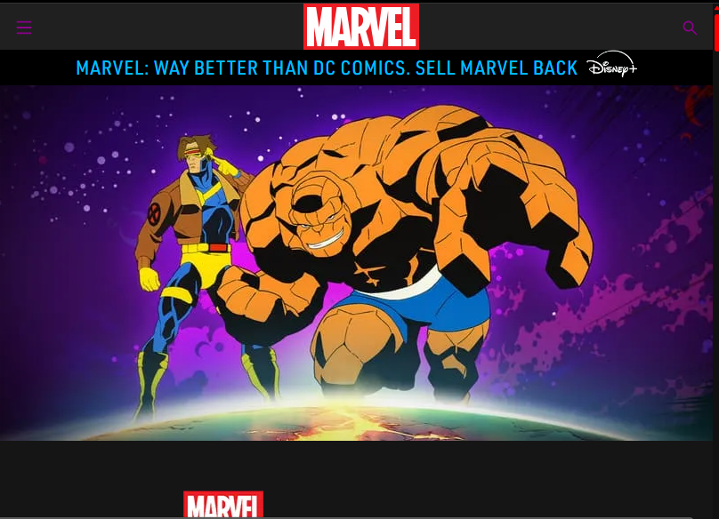

My Dev Tools Vandalism
I used browser developer tools to temporarily "vandalize" a website. Below is a screenshot showing my changes. These edits only appeared on my computer and did not affect the actual website.

What I "Vandalized"
Describe the changes you made to the website using the browser's developer tools. Some potential questions to consider:
- What text did you edit?
- What CSS properties did you modify?
- What made your edits interesting or amusing?
- Did you understand why some changes worked and some didn't?
- Why did you choose the changes you did?
- Were you able to understand how the HTML and CSS worked together to make the changes you made?
- Do you think you have a better sense of how dev tools can be used while crafting your own webpages?
I edited a heading to say "Marvel is way better than DC Comics"
I changed the font size, and color of some text and navigation buttons
I found it amusing to make this change since Marvel and DC have been rival for over 70 years. Even though my statement is true, it's fun to imagine the reaction!"
Yes! One of the things I wanted to change was the text on an image, which in hindsight, is impossible to change directly. Selectors like text, headings, buttons are much easier to change since they are elementes on the page.
I made the changes on the main page at the very top since that would make the biggest statement as soon as someone visited the site.
Yes! All the exercises and assignments have helped me understand how these languages work together.
Yes! All these tools make it easier to visualize and test changes before implementing them in the actual code. Makes testing before deployment much easier.